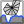

Characterization
Describe objects as numbers: feature vectors, abstraction scores and Fourier shape descriptors. See Feature vectors and cost matrices and Shape descriptors.
FeatureVector

Create a feature vector for an object
Nickname: FeatureVec
Assembles one feature vector per object from several property lists. Each input is a list holding one property for all objects, in the same object order (for example all lengths, all widths). Item i of every input goes into branch {i} of the output, in input order:
{0}: X1[0], X2[0], X3[0], ...
{1}: X1[1], X2[1], X3[1], ...So the output has one branch per object, and every branch has as many values as there are inputs. This is the layout the distance components (EuclideanDistance, AsymmEuclideanDistance, ManhattanDistance) expect for Demand and Supply.
Adding inputs. The component starts with one input, X1. Zoom in on the component on the canvas until the + and − buttons appear on the input side, and use them to add or remove inputs. Inputs are renamed X1, X2, ... in order after every change; at least one input always remains. Added inputs accept any data that converts to numbers.
Where it sits. Typical inputs are property lists such as the Length/Width/Height outputs of ObjectProperties or the effective dimensions output by LinearSet, PlanarSet, BoxSet and SphereSet. Build one FeatureVector for the demand and one for the supply, with the same properties connected to the same inputs: distances compare vectors position by position, so X1 of the demand is compared with X1 of the supply.
Notes
- Values are used as they are, with no scaling. A property measured in large numbers dominates the distance; scale properties first with
Normalize, or withPairNormalizeto give demand and supply the same scale. - All inputs must have the same number of items as
X1; otherwise the component stops with the error "Data inputs must have the same length: ...", naming the input and both counts. - Every input has list access. Give each input a single flat list. The output paths
{0},{1}, ... are created by the component and do not carry over the branch paths of the inputs.
Zoom in on the component to add or remove inputs with the ⊕/⊖ buttons. The table lists the inputs of a newly placed component.
Inputs
| Name | Nickname | Type | Access | Default | Description |
|---|---|---|---|---|---|
X1 | X1 | Number | list | Object property |
Outputs
| Name | Nickname | Type | Access | Default | Description |
|---|---|---|---|---|---|
FeatureVector | FV | Number | tree | Feature vector |
BoxScore

Measure how well a box abstracts an input object
Nickname: BoxScore
Measures how much of an object's effective box is empty, by comparing two volumes:
V_box: the volume of the object's effective box, i.e. its bounding box in thePCA1/PCA2/PCA3frame, scaled about its center byLengthBuffer,WidthBufferandHeightBuffer(the box shown by theEffectiveBoxoutput ofBoxObject).V_hull: the volume of the 3D convex hull of the object's sample points.
\[\text{score} = F \cdot \frac{\lvert V_\text{box} - V_\text{hull} \rvert}{V_\text{box}}\]
An object that fills its box (a rectangular block, with all buffers at 1) scores close to 0. With the default Factor of 100 the score is the percentage of the box not covered by the hull: a well-sampled cylinder in its box scores about 21 (1 − π/4). Buffers greater than 1 enlarge the box and so raise the score.
Where it sits. The input must be a BoxObject. Use the score to judge whether a box is a reasonable abstraction of a reclaimed element, or to flag objects whose box would overstate their material. LineScore and PlaneScore measure proportions instead of volumes, so their values are not on the same scale.
Notes
- The hull is built from the sample points (for Breps these include all vertices), while the box encloses the full geometry. For curved objects a low
NumSamplesgives a smaller hull and a higher score. - The 3D hull is computed the first time a component needs it and then kept with the object.
- For a flat or straight object the box has no volume: the component gives the warning "The effective box has no volume ..." and no output. Use
PlaneScoreorLineScore. Factoris a plain multiplier (default 100, so the score reads as a percentage).
Inputs
| Name | Nickname | Type | Access | Default | Description |
|---|---|---|---|---|---|
BoxObject | BoxObj | DesignObject | item | Object to measure | |
Factor | F | Number | item | 100 | Multiplier applied to the score (default 100: the score reads as a percentage) |
Outputs
| Name | Nickname | Type | Access | Default | Description |
|---|---|---|---|---|---|
BoxScore | Score | Number | item | Box score. Optimal value is 0. |
LineScore

Measure how well a line abstracts an input object
Nickname: LineScore
Measures how far an object is from being a line, from the proportions of its bounding box. The object's Length, Width and Height are the extents of its bounding box along PCA1, PCA2 and PCA3 (see Object). The score is the larger of the two cross-section dimensions relative to the length, multiplied by Factor:
\[\text{score} = F \cdot \frac{\max(\text{Width},\ \text{Height})}{\text{Length}}\]
A perfectly slender object scores 0. With the default Factor of 100 the score reads as a percentage: a score of 5 means the larger cross-section dimension is 5% of the length. A cube scores about 100.
Where it sits. Connect any DCT object: Object, LinearObject, PlanarObject, BoxObject or SphericalObject. Use it to judge whether a reclaimed element is adequately represented as a line (for example, before modeling it as a LinearObject), or to filter an inventory by slenderness. PlaneScore, BoxScore and SphereScore measure the other abstractions; note that the box and sphere scores are volume ratios, so their values are not on the same scale as this one.
Notes
- The measured dimensions are used, not the effective ones: buffers such as
LengthBufferhave no effect. PCA1is the direction of greatest spread of the samples, soLengthis normally the largest dimension, but this is not enforced; for unusual shapes the ratio can exceed 1.Factoris a plain multiplier (default 100, so the score reads as a percentage).- Warning "The object has no length ..." and no output when all samples coincide.
- The score depends on the orientation of the local frame, so
OverridePCAchanges it.
Inputs
| Name | Nickname | Type | Access | Default | Description |
|---|---|---|---|---|---|
Object | Obj | DesignObject | item | Object to measure | |
Factor | F | Number | item | 100 | Multiplier applied to the score (default 100: the score reads as a percentage) |
Outputs
| Name | Nickname | Type | Access | Default | Description |
|---|---|---|---|---|---|
LineScore | Score | Number | item | Line score. Optimal value is 0. |
PlaneScore

Measure how well a plane abstracts an input object
Nickname: PlaneScore
Measures how far an object is from being flat, from the proportions of its bounding box. The object's Length, Width and Height are the extents of its bounding box along PCA1, PCA2 and PCA3 (see Object); Height is the thickness perpendicular to the plane of greatest spread. The score is the thickness relative to the smaller of the two in-plane dimensions, multiplied by Factor:
\[\text{score} = F \cdot \max\!\left(\frac{\text{Height}}{\text{Length}},\ \frac{\text{Height}}{\text{Width}}\right)\]
A perfectly flat object (including a planar curve) scores 0. With the default Factor of 100 the score reads as a percentage: a 20 mm board that is 200 mm wide and 2 m long scores 10. A cube scores about 100.
Where it sits. Connect any DCT object: Object, LinearObject, PlanarObject, BoxObject or SphericalObject. Use it to judge whether a reclaimed element is adequately represented as a plane (for example, before modeling it as a PlanarObject), or to filter an inventory. Compare with LineScore, which uses the same kind of ratio.
Notes
- The measured dimensions are used, not the effective ones: buffers and the
Thicknessof aPlanarObjecthave no effect. - For a straight object
Widthis 0: the component gives the warning "The object has no width (it is straight) ..." and no output. UseLineScore. Factoris a plain multiplier (default 100, so the score reads as a percentage).- The score depends on the orientation of the local frame, so
OverridePCAchanges it.
Inputs
| Name | Nickname | Type | Access | Default | Description |
|---|---|---|---|---|---|
Object | Obj | DesignObject | item | Object to measure | |
Factor | F | Number | item | 100 | Multiplier applied to the score (default 100: the score reads as a percentage) |
Outputs
| Name | Nickname | Type | Access | Default | Description |
|---|---|---|---|---|---|
PlaneScore | Score | Number | item | Plane score. Optimal value is 0. |
SphereScore

Measure how well a sphere abstracts an input object
Nickname: SphereScore
Measures how much of an object's effective sphere is empty, by comparing a reference sphere volume with the volume of the object's 3D convex hull. The radius is the object's effective radius: RadiusBuffer times the largest distance from the center of the object's bounding box to any of its sample points (the sphere shown by the EffectiveSphere output of SphericalObject). The score is
\[\text{score} = F \cdot \frac{\lvert V_\text{sphere} - V_\text{hull} \rvert}{V_\text{sphere}}\]
where V_sphere = (4/3)·π·r³ and V_hull is the volume of the convex hull of the sample points. With RadiusBuffer ≥ 1 the sphere encloses every sample, so the hull fits inside it and the score runs from 0 (the object fills its sphere) to Factor (the sphere is empty).
Where it sits. The input must be a SphericalObject. Use the score to judge whether a sphere is a reasonable abstraction of a reclaimed element. BoxScore is the equivalent volume ratio for boxes.
Notes
- Before v0.5.1 the sphere volume was computed as
π·r³(an integer division in4 / 3) and a hull larger than that volume was counted as empty, so well-sampled spheres scored worst. Scores from earlier versions are not comparable. - With
RadiusBuffer< 1 the hull can be larger than the sphere; the absolute difference is then used. - Warning "The effective sphere has no volume ..." and no output when all samples coincide.
- The hull is built from the sample points, so a low
NumSamplesgives a smaller hull. It is computed the first time a component needs it and then kept with the object. - For a flat object (all samples in one plane) the hull is an empty mesh with zero volume, and the score equals
Factor. Factoris a plain multiplier (default 100, so the score reads as a percentage).
Inputs
| Name | Nickname | Type | Access | Default | Description |
|---|---|---|---|---|---|
SphericalObject | SphereObj | DesignObject | item | Object to measure | |
Factor | F | Number | item | 100 | Multiplier applied to the score (default 100: the score reads as a percentage) |
Outputs
| Name | Nickname | Type | Access | Default | Description |
|---|---|---|---|---|---|
SphereScore | Score | Number | item | Sphere score. Optimal value is 0. |
HarmonicAnalysisComplex

Fourier shape descriptor of a complex signature (e.g. ComplexSignature): the radius of each harmonic in model units, independent of sample count, ordered |c1|, |c-1|, |c2|, |c-2|, ... N samples give N-1 values.
Nickname: HarmonicsComplex
Describes the shape of a planar outline by its Fourier coefficients, using the full 2D sample positions z = u + iv (the ComplexSignature of RadialSignature) rather than only their distances. It therefore distinguishes shapes that HarmonicAnalysisReal can confuse.
What the values mean. The outline is written as a sum of circles, each traced at a whole number of turns per trip around the curve:
\[z(t) = \sum_k c_k\, e^{i k t}\]
|c_k| is the radius of circle k in model units. Positive k turns counter-clockwise k times per trip; negative k turns clockwise |k| times. In practice:
|c1|is the radius of the best-fitting circle traced counter-clockwise: the overall size.|c-1|adds the clockwise circle. Together,c1andc-1form the best-fitting ellipse, with semi-axes|c1| + |c-1|and|c1| − |c-1|;|c-1| = 0means round,|c-1|close to|c1|means very elongated.- Higher pairs
|c2|, |c-2|, |c3|, ...add finer features. A shape withn-fold symmetry shows up mainly atc(1−n)andc(1+n): a square gives|c-3|and|c5|, a triangle|c-2|and|c4|.
A circle centered at the origin gives |c1| = R and zeros elsewhere, whatever the sample count.
Computation. First the samples are made counter-clockwise: if the polygon through them has negative signed area, every value is conjugated (mirrored). Then c_k = (1/N) Σ_j z_j e^(−2πi·jk/N) is computed with an FFT, and the output is |c1|, |c-1|, |c2|, |c-2|, ...: N − 1 values for N samples. For even N, the coefficient at N/2 appears once, at the end. c0 (the mean position of the samples) is left out. Taking magnitudes removes rotation and start point, and the counter-clockwise step removes direction and mirroring, which matters because a fitted plane's normal, and so the apparent direction of the curve, is arbitrary.
FVLength counts values, not harmonic pairs: FVLength = 4 keeps |c1|, |c-1|, |c2|, |c-2|. Because the order is by |k|, truncating keeps the lowest frequencies on both sides. These describe the overall form; the high ones describe corners, fine detail and sampling noise. Truncating also gives every curve a vector of the same length, which the distance components require.
Normalize divides every value by |c1|, so the descriptor describes shape only, not size. The first value is then always 1 and can be ignored.
Where it sits. The output list is one feature vector per curve (one branch per curve when the component runs over several signatures). Connect it to EuclideanDistance or ManhattanDistance as Demand/Supply, then to Match.
Notes
Signatureaccepts the values fromComplexSignature, Grasshopper complex numbers, and plain numbers (imaginary part 0). Anything else gives the error "Signature item ... is not a complex number".- Errors: "Signature needs at least 2 samples", "FVLength must be at least 1", "Cannot normalize: |c1| (the fundamental) is 0".
- Remark when
FVLengthis larger than the number of values available: the output is shortened to all available values. Use more samples for more values. Normalizewas added in v0.5; definitions saved with v0.4 open with it set to False. The v0.5 values differ from v0.4 (see the release notes).
Inputs
| Name | Nickname | Type | Access | Default | Description |
|---|---|---|---|---|---|
Signature | ComplexSig | Generic Data | list | Shape signature as a list of complex numbers (u + iv per sample) | |
FVLength | |FV| | Integer | item (optional) | Number of values to keep (lowest frequencies first). Default: all | |
Normalize | Norm | Boolean | item | False | Divide by |c1| (the radius of the best-fitting circle), so the descriptor ignores size; the first value is then 1 |
Outputs
| Name | Nickname | Type | Access | Default | Description |
|---|---|---|---|---|---|
HarmonicFeatureVector | FV | Number | list | |c1|, |c-1|, |c2|, |c-2|, ... after orienting the samples counter-clockwise. Invariant to position, rotation, start point, direction and mirroring; to scale only with Normalize. |
HarmonicAnalysisReal

Fourier shape descriptor of a real-valued signature (e.g. DistanceSignature): the amplitude of harmonics 1, 2, 3, ... in model units, independent of sample count. N samples give N/2 harmonics.
Nickname: HarmonicsReal
Describes the shape of a real-valued signature, typically the DistanceSignature of RadialSignature, by its Fourier harmonics. Think of the signature as a radius r(t) that varies as you travel once around the curve (t from 0 to 2π, advancing with arc length because the samples are equally spaced along the curve). Any such periodic signal is a sum of waves:
\[r(t) = A_0 + \sum_{k \ge 1} A_k \cos(k\,t + \varphi_k)\]
A_0 is the mean radius. Harmonic k is a wave with k bumps per trip around the outline, and A_k is its amplitude in model units. As a guide for a distance signature:
A_1: one bulge, i.e. the outline is lopsided about its centroid (egg shape).A_2: two bulges, i.e. elongation (ellipse, long rectangle).A_3,A_4, ...: three-lobed, four-cornered (square) shapes, and so on.
A circle centered at the centroid has all A_k = 0. The output is A_1, A_2, ..., A_⌊N/2⌋ for N samples; A_0 and the phases φ_k are left out, which is why the result does not change with the start point, direction, in-plane rotation or mirroring.
Computation. The Fourier-series coefficients c_k = (1/N) Σ_j s_j e^(−2πi·jk/N) are computed with an FFT. Then A_k = 2|c_k|, except at k = N/2 for even N, where A_k = |c_k|. Because of the 1/N, the values do not depend on the number of samples.
FVLength keeps the first values only, lowest harmonics first. Low harmonics describe the overall form; high ones describe corners, fine detail and sampling noise, and are the least reliable. Truncating also gives every curve a vector of the same length, which the distance components require.
Normalize divides every amplitude by A_0, the mean of the signature (for a distance signature, the mean radius). The descriptor then describes shape only, not size, and is unitless: A_2 = 0.1 means a variation of 10% of the mean radius.
Where it sits. The output list is one feature vector per curve (one branch per curve when the component runs over several signatures). Connect it to EuclideanDistance or ManhattanDistance as Demand/Supply, then to Match. HarmonicAnalysisComplex is the alternative for the ComplexSignature; it keeps more information about the shape.
Notes
- Errors: "Signature needs at least 2 samples", "FVLength must be at least 1", "Cannot normalize: the signature's mean is 0".
- Remark when
FVLengthis larger than the number of harmonics available: the output is shortened to all available harmonics. Use more samples for more harmonics. Normalizewas added in v0.5; definitions saved with v0.4 open with it set to False. The v0.5 values differ from v0.4 (see the release notes).
Inputs
| Name | Nickname | Type | Access | Default | Description |
|---|---|---|---|---|---|
Signature | DistSig | Number | list | Shape signature as a list of real-valued numbers | |
FVLength | |FV| | Integer | item (optional) | Number of harmonics to keep (lowest first). Default: all | |
Normalize | Norm | Boolean | item | False | Divide by the mean of the signature (for DistanceSignature: the mean radius), so the descriptor ignores size |
Outputs
| Name | Nickname | Type | Access | Default | Description |
|---|---|---|---|---|---|
HarmonicFeatureVector | FV | Number | list | Amplitudes A1, A2, ... of r(t) = A0 + Σ Ak·cos(k·t + φk). Invariant to start point, direction, rotation and mirroring; to scale only with Normalize. |
RadialSignature

Perform a radial signature analysis on a curve.
Nickname: RadialSig
Turns a curve into a shape signature: a list of sample positions measured from the curve's center, ready for Fourier analysis. The steps are:
- Sampling. The curve is divided into
NumSamplessegments of equal arc length (Curve.DivideByCount). A closed curve givesNumSamplespoints; an open curve givesNumSamples + 1, including both ends. The samples are equally spaced along the curve, not at equal angles around the center. - Plane. If
Planeis not supplied, a plane is fitted to the sample points. Either way, the plane's origin is then moved to the curve's centroid; a supplied plane keeps its orientation. - Center. For a closed planar curve the centroid is the centroid of the enclosed area (
AreaMassProperties), the same point a design object uses. For open or non-planar curves it is the length centroid (the center of mass of the curve as a wire). Before v0.5.1 the length centroid was always used. - Signature. Each sample point is expressed in the plane's coordinates
(u, v); any distance off the plane is discarded.ComplexSignatureholdsu + ivfor each sample, andDistanceSignatureholds its magnitude, the in-plane distance from the centroid.ProjectedCurveis the curve projected onto the plane, andRaysare lines from the centroid to each projected sample, for checking the result visually.
Where it sits. Feed DistanceSignature into HarmonicAnalysisReal and ComplexSignature into HarmonicAnalysisComplex to get a fixed-length shape descriptor per curve, which can then go to a distance component such as EuclideanDistance. Typical inputs are planar outlines of reclaimed parts, for example from PlanarOutline or PlanarHull.
Notes
- The directions of a fitted plane's axes are arbitrary, so the raw
u,vvalues may appear rotated or mirrored. The harmonics components are invariant to both. Nsamples resolve harmonics up toN/2, so use at least twice as many samples as the highest harmonic you need.- Remark for an open curve: "Curve is open: the signature is treated as periodic, so the jump from end back to start adds high harmonics".
- Errors: "NumSamples must be at least 2", "Could not divide the curve", "Could not fit a plane to the curve (is it a straight line?). Supply a Plane.", "Could not compute the curve centroid".
- Distances are in model units.
Inputs
| Name | Nickname | Type | Access | Default | Description |
|---|---|---|---|---|---|
Curve | Curve | Curve | item | Curve to analyze | |
NumSamples | n | Integer | item | 20 | Number of radial samples to take |
Plane | Plane | Plane | item (optional) | Analysis plane. If not supplied, auto-fit will occur |
Outputs
| Name | Nickname | Type | Access | Default | Description |
|---|---|---|---|---|---|
ComplexSignature | ComplexSig | Generic Data | list | Curve signature where planar coordinates [u, v] is converted to complex number u + iv | |
DistanceSignature | DistSig | Number | list | Distance from the curve centroid to each sample point, measured in the plane (= |ComplexSignature|) | |
ProjectedCurve | Curve | Curve | item | Planar projection of curve | |
Rays | Rays | Line | list | Rays from the centroid to each projected sample point |